Uniwersytet Śląski w Katowicach · Dział Nauki
AI w pracy
Szukaj w przewodniku
×
Przewodnik Działu Nauki
Podaj hasło otrzymane razem z linkiem. Na tym urządzeniu wpisuje się je tylko raz.
Hasło
Otwórz